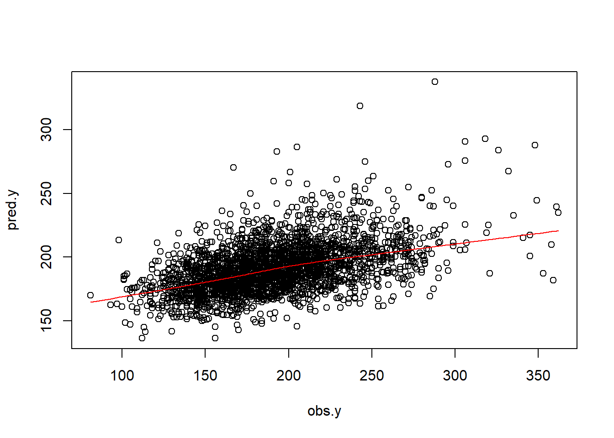

Overfitting and performance
The following tutorial extends the work from the previous lab and focuses on understanding overfitting, evaluating performance, and function writing in the context of linear modeling for a continuous outcome variable, cholesterol levels.
Load data
Load the data saved at the end of previous part of the lab.
Now we will fit the final model that we decided at the end of previous part of the lab.
formula4 <- as.formula("cholesterol~gender + age + born +
race + education + married +
income + diastolicBP + systolicBP +
bmi + triglycerides + uric.acid +
protein + bilirubin + phosphorus + sodium + potassium +
globulin + calcium + physical.work +
physical.recreational + diabetes")
formula4
#> cholesterol ~ gender + age + born + race + education + married +
#> income + diastolicBP + systolicBP + bmi + triglycerides +
#> uric.acid + protein + bilirubin + phosphorus + sodium + potassium +
#> globulin + calcium + physical.work + physical.recreational +
#> diabetes
fit4 <- lm(formula4, data = analytic3)
summary(fit4)
#>
#> Call:
#> lm(formula = formula4, data = analytic3)
#>
#> Residuals:
#> Min 1Q Median 3Q Max
#> -115.465 -23.695 -2.598 20.017 177.264
#>
#> Coefficients:
#> Estimate Std. Error t value Pr(>|t|)
#> (Intercept) 136.871606 51.998527 2.632 0.00853 **
#> genderMale -13.064857 1.802099 -7.250 5.48e-13 ***
#> age 0.351838 0.056116 6.270 4.22e-10 ***
#> bornOthers 7.877420 1.947498 4.045 5.39e-05 ***
#> raceHispanic -5.790547 2.323010 -2.493 0.01274 *
#> raceOther -4.879882 2.781673 -1.754 0.07950 .
#> raceWhite -0.847635 2.130149 -0.398 0.69072
#> educationHigh.School 2.851633 1.617435 1.763 0.07801 .
#> educationSchool -2.446765 3.084409 -0.793 0.42769
#> marriedNever.married -5.739509 1.997152 -2.874 0.00409 **
#> marriedPreviously.married 0.342206 1.968165 0.174 0.86198
#> incomeBetween.25kto54k -0.867063 1.990253 -0.436 0.66312
#> incomeBetween.55kto99k 2.462130 2.169757 1.135 0.25658
#> incomeOver100k 2.626046 2.394560 1.097 0.27289
#> diastolicBP 0.374971 0.062238 6.025 1.93e-09 ***
#> systolicBP 0.029976 0.049515 0.605 0.54497
#> bmi -0.309530 0.118927 -2.603 0.00930 **
#> triglycerides 0.124806 0.006427 19.419 < 2e-16 ***
#> uric.acid 1.357242 0.609012 2.229 0.02593 *
#> protein 4.767008 2.931636 1.626 0.10406
#> bilirubin -6.060791 2.593508 -2.337 0.01952 *
#> phosphorus -0.076472 1.341957 -0.057 0.95456
#> sodium -1.026686 0.347679 -2.953 0.00318 **
#> potassium 0.893507 2.283488 0.391 0.69561
#> globulin -2.198037 3.036091 -0.724 0.46915
#> calcium 12.202366 2.574400 4.740 2.25e-06 ***
#> physical.workYes -0.439108 1.651078 -0.266 0.79030
#> physical.recreationalYes 1.238756 1.667670 0.743 0.45767
#> diabetesYes -19.032748 2.158825 -8.816 < 2e-16 ***
#> ---
#> Signif. codes: 0 '***' 0.001 '**' 0.01 '*' 0.05 '.' 0.1 ' ' 1
#>
#> Residual standard error: 35.22 on 2603 degrees of freedom
#> Multiple R-squared: 0.2415, Adjusted R-squared: 0.2334
#> F-statistic: 29.61 on 28 and 2603 DF, p-value: < 2.2e-16Design Matrix
Expands factors to a set of dummy variables.
We can use the model.matrix function to construct a design/model matrix, such as expand factor variables to a matrix of dummy variable
The dimensions of the model matrix are obtained, and the total number of model parameters (p) is calculated.
head(model.matrix(fit4))
#> (Intercept) genderMale age bornOthers raceHispanic raceOther raceWhite
#> 1 1 1 62 0 0 0 1
#> 2 1 1 53 1 0 0 1
#> 4 1 0 56 0 0 0 1
#> 5 1 0 42 0 0 0 0
#> 10 1 1 22 0 0 0 0
#> 11 1 0 32 1 1 0 0
#> educationHigh.School educationSchool marriedNever.married
#> 1 0 0 0
#> 2 1 0 0
#> 4 0 0 0
#> 5 0 0 0
#> 10 0 0 1
#> 11 0 0 0
#> marriedPreviously.married incomeBetween.25kto54k incomeBetween.55kto99k
#> 1 0 0 1
#> 2 1 0 0
#> 4 0 0 1
#> 5 1 1 0
#> 10 0 1 0
#> 11 0 1 0
#> incomeOver100k diastolicBP systolicBP bmi triglycerides uric.acid protein
#> 1 0 70 128 27.8 158 4.2 7.5
#> 2 0 88 146 30.8 170 7.0 7.4
#> 4 0 72 132 42.4 93 5.4 6.1
#> 5 0 70 100 20.3 52 3.3 7.7
#> 10 0 70 110 28.0 77 6.0 7.4
#> 11 0 70 120 28.2 295 5.2 7.4
#> bilirubin phosphorus sodium potassium globulin calcium physical.workYes
#> 1 0.5 4.7 136 4.30 2.9 9.8 0
#> 2 0.6 4.4 140 4.55 2.9 9.8 0
#> 4 0.3 3.8 141 4.08 2.3 8.9 0
#> 5 0.3 3.2 136 3.50 3.4 9.3 0
#> 10 0.2 5.3 139 4.16 3.0 9.3 0
#> 11 0.4 3.1 138 4.31 2.9 10.3 0
#> physical.recreationalYes diabetesYes
#> 1 0 1
#> 2 0 0
#> 4 0 0
#> 5 0 0
#> 10 1 0
#> 11 0 0
# Dimension of the model matrix
dim(model.matrix(fit4))
#> [1] 2632 29
# Number of parameters = intercept + slopes
p <- dim(model.matrix(fit4))[2]
p
#> [1] 29Check prediction
The observed and predicted cholesterol values are summarized.
obs.y <- analytic3$cholesterol
summary(obs.y)
#> Min. 1st Qu. Median Mean 3rd Qu. Max.
#> 81.0 163.0 189.0 191.5 216.0 362.0
# Predict the above fit on analytic3 data
pred.y <- predict(fit4, analytic3)
summary(pred.y)
#> Min. 1st Qu. Median Mean 3rd Qu. Max.
#> 136.3 178.2 189.4 191.5 202.4 337.6
n <- length(pred.y)
n
#> [1] 2632
plot(obs.y,pred.y)
lines(lowess(obs.y,pred.y), col = "red")
# Prediction on a new data: fictitious.data
str(fictitious.data)
#> 'data.frame': 4121 obs. of 33 variables:
#> $ ID : num 83732 83733 83734 83735 83736 ...
#> $ gender : chr "Male" "Male" "Male" "Female" ...
#> $ age : num 62 53 78 56 42 72 22 32 56 46 ...
#> $ born : chr "Born in 50 US states or Washingt" "Others" "Born in 50 US states or Washingt" "Born in 50 US states or Washingt" ...
#> $ race : chr "White" "White" "White" "White" ...
#> $ education : chr "College" "High.School" "High.School" "College" ...
#> $ married : chr "Married" "Previously.married" "Married" "Married" ...
#> $ income : chr "Between.55kto99k" "<25k" "<25k" "Between.55kto99k" ...
#> $ weight : num 135630 25282 12576 102079 18235 ...
#> $ psu : num 1 1 1 1 2 1 2 1 2 1 ...
#> $ strata : num 125 125 131 131 126 128 128 125 126 121 ...
#> $ diastolicBP : num 70 88 46 72 70 58 70 70 116 94 ...
#> $ systolicBP : num 128 146 138 132 100 116 110 120 178 144 ...
#> $ bodyweight : num 94.8 90.4 83.4 109.8 55.2 ...
#> $ bodyheight : num 184 171 170 161 165 ...
#> $ bmi : num 27.8 30.8 28.8 42.4 20.3 28.6 28 28.2 33.6 27.6 ...
#> $ waist : num 101.1 107.9 116.5 110.1 80.4 ...
#> $ smoke : chr "Not.at.all" "Every.day" "Not.at.all" "Not.at.all" ...
#> $ alcohol : num 1 6 0 1 1 0 8 1 0 1 ...
#> $ cholesterol : num 173 265 229 174 204 190 164 190 145 242 ...
#> $ cholesterolM2 : num 4.47 6.85 5.92 4.5 5.28 4.91 4.24 4.91 3.75 6.26 ...
#> $ triglycerides : num 158 170 299 93 52 52 77 295 121 497 ...
#> $ uric.acid : num 4.2 7 7.3 5.4 3.3 4.9 6 5.2 4.8 6.5 ...
#> $ protein : num 7.5 7.4 7.3 6.1 7.7 7.1 7.4 7.4 6.9 6.8 ...
#> $ bilirubin : num 0.5 0.6 0.5 0.3 0.3 0.5 0.2 0.4 0.4 0.5 ...
#> $ phosphorus : num 4.7 4.4 3.6 3.8 3.2 3.7 5.3 3.1 4.1 3.6 ...
#> $ sodium : num 136 140 140 141 136 140 139 138 140 138 ...
#> $ potassium : num 4.3 4.55 4.7 4.08 3.5 4.2 4.16 4.31 4.5 4.27 ...
#> $ globulin : num 2.9 2.9 2.8 2.3 3.4 3 3 2.9 2.9 2.6 ...
#> $ calcium : num 9.8 9.8 9.7 8.9 9.3 9.3 9.3 10.3 9.5 9.3 ...
#> $ physical.work : chr "No" "No" "No" "No" ...
#> $ physical.recreational: chr "No" "No" "No" "No" ...
#> $ diabetes : chr "Yes" "No" "Yes" "No" ...
#> - attr(*, "na.action")= 'omit' Named int [1:885] 16 30 39 48 50 58 61 65 67 68 ...
#> ..- attr(*, "names")= chr [1:885] "27" "68" "90" "112" ...
pred.y.new1 <- predict(fit4, fictitious.data)
summary(pred.y.new1)
#> Min. 1st Qu. Median Mean 3rd Qu. Max.
#> 128.7 178.9 190.6 192.5 203.3 557.4Measuring prediction error
Continuous outcomes
R2
The Sum of Squares of Errors (SSE) and the Total Sum of Squares (SST) are calculated. The proportion of variance explained by the model is then calculated as R2.
See Wikipedia (2023a)
RMSE
The Root Mean Square Error is calculated to measure the average magnitude of the errors between predicted and observed values.
See Wikipedia (2023b)
Adj R2
It provides a measure of how well the model generalizes and adjusts R2 based on the number of predictors.
See Wikipedia (2023a)
Writing function
Syntax for Writing Functions
Example of a simple function
A bit more complicated
# one argument
model.fit <- function(data.for.fitting){
formulax <- as.formula("cholesterol~gender + age + born")
fitx <- lm(formulax, data = data.for.fitting)
result <- coef(fitx)
return(result)
}
model.fit(data.for.fitting=analytic)
#> (Intercept) genderMale age bornOthers
#> 184.3131838 -7.8095595 0.2225745 11.1557140
model.fit(data.for.fitting=analytic3)
#> (Intercept) genderMale age bornOthers
#> 176.1286576 -4.8256829 0.3375009 7.7186190# adding one more argument: digits
model.fit <- function(data.for.fitting, digits=2){
formulax <- as.formula("cholesterol~gender + age + born")
fitx <- lm(formulax, data = data.for.fitting)
result <- coef(fitx)
result <- round(result,digits)
return(result)
}
model.fit(data.for.fitting=analytic)
#> (Intercept) genderMale age bornOthers
#> 184.31 -7.81 0.22 11.16
model.fit(data.for.fitting=analytic3)
#> (Intercept) genderMale age bornOthers
#> 176.13 -4.83 0.34 7.72Function that gives performance measures
let us create a function that will give us the performance measures:
perform <- function(new.data,
model.fit,model.formula=NULL,
y.name = "Y",
digits=3){
# data dimension
p <- dim(model.matrix(model.fit))[2]
# predicted value
pred.y <- predict(model.fit, new.data)
# sample size
n <- length(pred.y)
# outcome
new.data.y <- as.numeric(new.data[,y.name])
# R2
R2 <- caret:::R2(pred.y, new.data.y)
# adj R2 using alternate formula
df.residual <- n-p
adjR2 <- 1-(1-R2)*((n-1)/df.residual)
# RMSE
RMSE <- caret:::RMSE(pred.y, new.data.y)
# combine all of the results
res <- round(cbind(n,p,R2,adjR2,RMSE),digits)
# returning object
return(res)
}
perform(new.data = analytic3, y.name = "cholesterol", model.fit = fit4)
#> n p R2 adjR2 RMSE
#> [1,] 2632 29 0.242 0.233 35.023